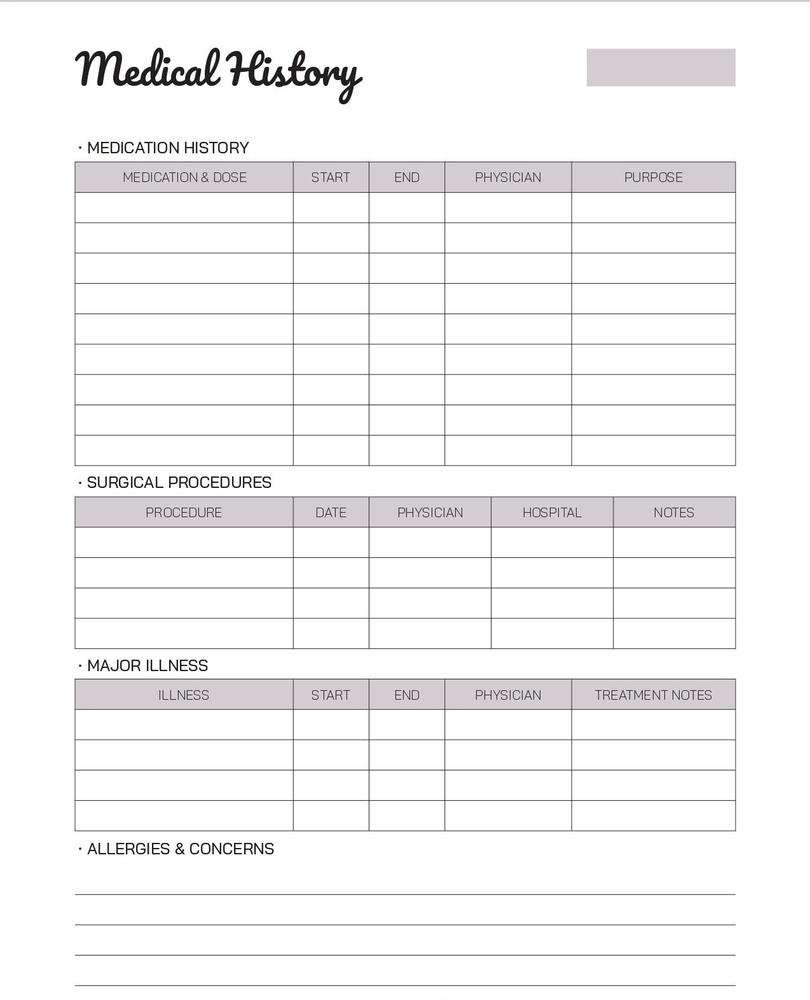
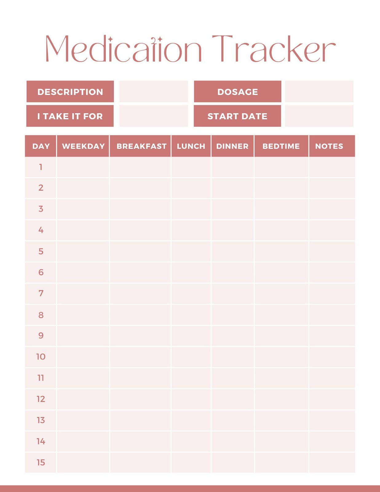
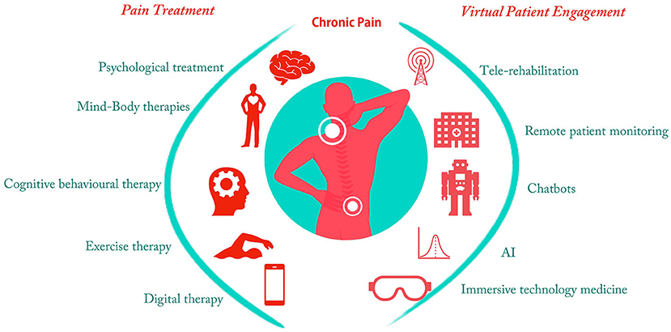

Names:
Name 1: Bora Başaran
Name 2: Rezan Barış
Name 3: Azmi Baran Arslan
Name 4: Emirhan İdiz
Jury Members:
Jury 1: Müslim BOZYİĞİT
Supervisor:
Supervisor: Eren ULU
Project Name:
Project: New Life
Backlog
| Date |
Topic |
Completed |
| February 19 - February 25, 2024 |
Meet up with the group and discuss possible project ideas
and upload project proposal |
No |
| February 26 - March 3, 2024 |
Decide project topic and upload project proposal to LMS |
Yes |
| March 4 - March 10, 2024 |
Meet up to discuss the project specifications report and research |
No |
| March 11 - March 17, 2024 |
Complete the requirements and prepare project specifications report
and upload it to LMS |
Yes |
| March 25 - March 31, 2024 |
We meet to review the analysis report and prepare our project fundamentals |
No |
| April 8 - April 14, 2024 |
Each member completed the assigned parts of analysis report.
We merged it and uploaded it to LMS |
Yes |
| April 22 - April 28, 2024 |
We went to our superviser Eren Ulu to get ideas what can we use
to build our project and move accordingly |
Yes |
| May 20 - May 26, 2024 |
Our jury Müslim Bozyiğit gave feedback to our previous reports so
we started to revise it accordingly as much as possible |
No |
| May 27 - June 2, 2024 |
We revised and updated our reports according to feedbacks and went
to Müslim Bozyiğit to get feedback and then we uploaded design report to LMS |
Yes |
New Life Showcase

Personal Health Tracking and Surgery History
Our modern healthcare app allows users to easily view old surgery records, new surgery dates, and old surgery reports. This feature helps patients understand and track their own health history. Detailed information about surgeries, doctors, and treatment plans allows users to manage their health conditions more effectively.

Prescription and Medicine Tracking
Our application allows users to view previously taken medications, prescriptions and the dates of these prescriptions in detail. Thanks to this feature, patients can monitor their treatments regularly and make informed decisions about medication use. Users can communicate more effectively with their doctors over their past prescriptions and medications and contribute to future treatment planning.

Disease and Pain Detection
Our app helps users track their health on a daily basis. Users can record instant disease symptoms and pain conditions by answering the questions specified through the application. This information is analyzed by AI-powered algorithms and users are provided with alerts about potential health problems or emergencies.
Artificial Intelligence Supported Diagnosis and Recommendations
Our app provides AI-powered diagnoses and recommendations using users' health data. Users respond to app-directed questions about specific health issues, and AI uses that information to come up with possible diagnoses. This allows users to gain greater awareness of their health conditions and seek professional medical help when necessary.